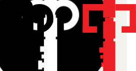
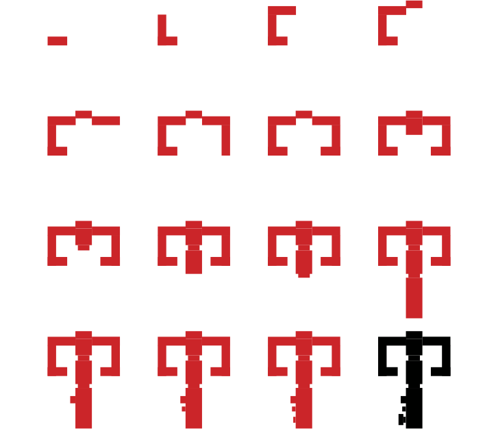
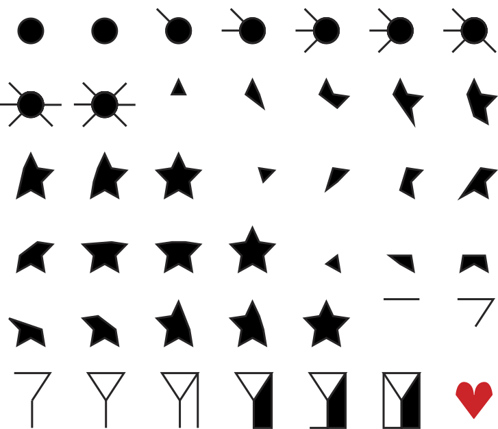
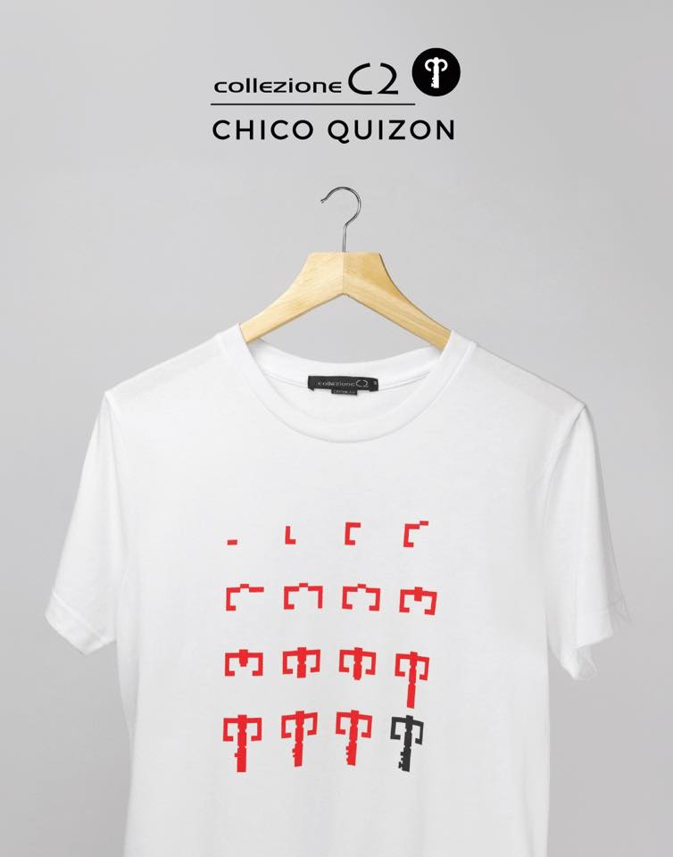
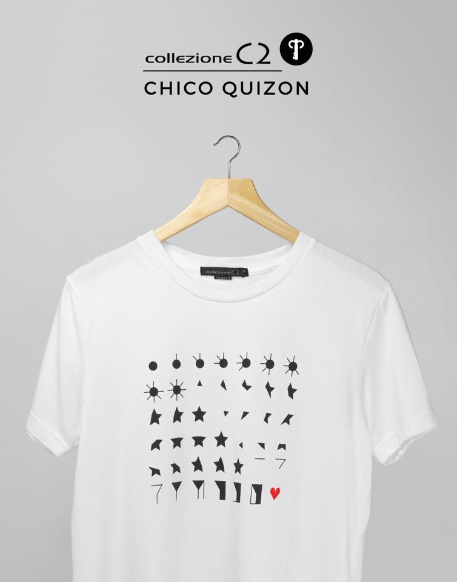
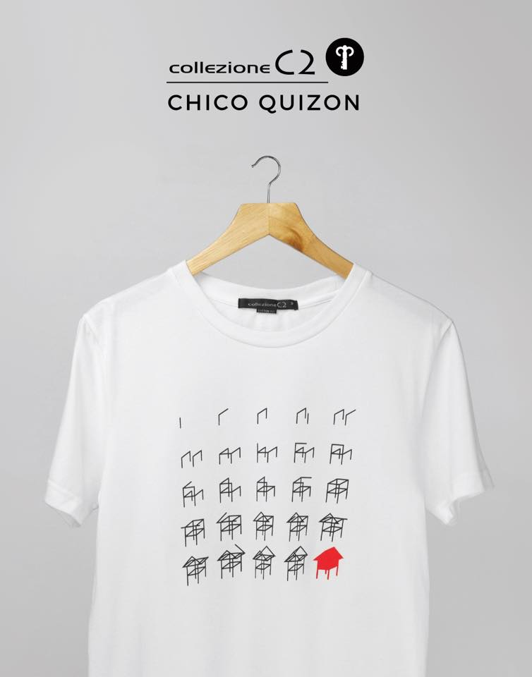

Collezione's catalog called for a minimalist sensibility when it came to the design of their graphic tees. My fascination with the work of conceptual artist Sol LeWitt and my interest in information graphics were the foundations of my Sequential Graphics series. The Logo and Flag sequences were my takes on iconography that are familiar to Collezione's audience. They have been utilized in the polo shirt collections and I believed that it was only fitting to have the graphic tees have their turn at interpreting these graphical elements. The Bahay Kubo Sequence is my contribution to Colleziones' portfolio of designs that have referenced traditional filipino iconography, such as the flag,Philippine Map and the sampaguita.





